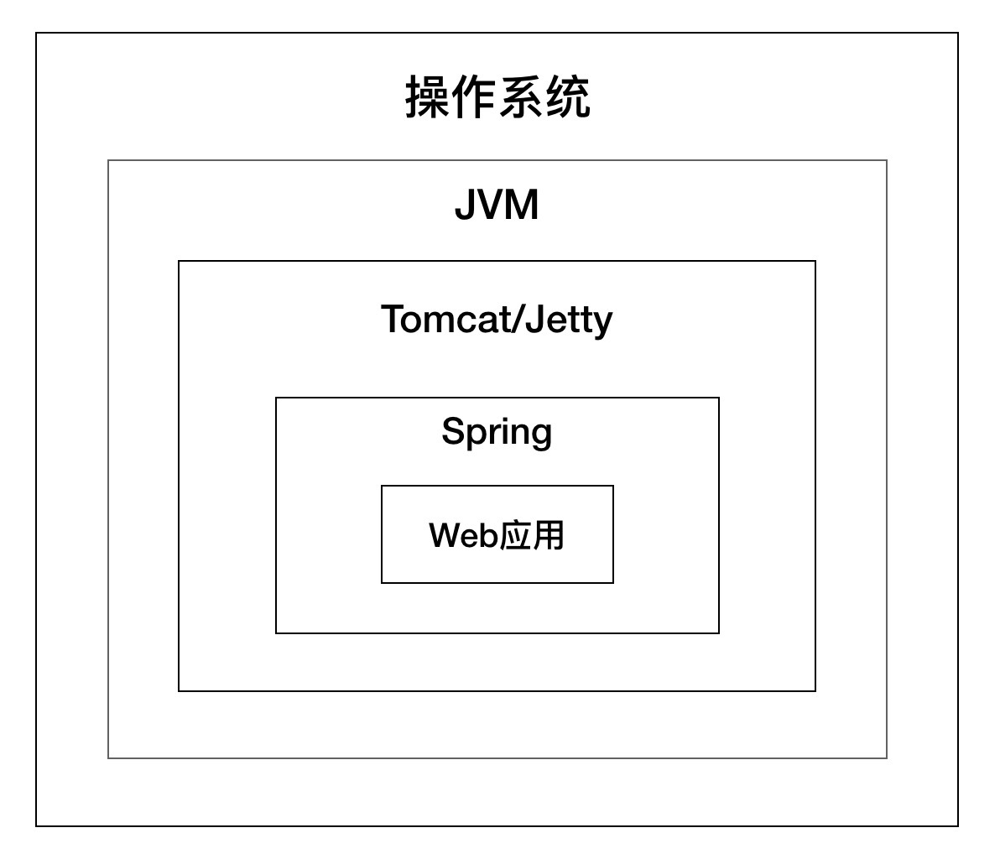

- 00 开篇词 Java程序员如何快速成长？.md
- 01 Web容器学习路径.md
- 02 HTTP协议必知必会.md
- 03 你应该知道的Servlet规范和Servlet容器.md
- 04 实战：纯手工打造和运行一个Servlet.md
- 05 Tomcat系统架构（上）： 连接器是如何设计的？.md
- 06 Tomcat系统架构（下）：聊聊多层容器的设计.md
- 07 Tomcat如何实现一键式启停？.md
- 08 Tomcat的“高层们”都负责做什么？.md
- 09 比较：Jetty架构特点之Connector组件.md
- 10 比较：Jetty架构特点之Handler组件.md
- 11 总结：从Tomcat和Jetty中提炼组件化设计规范.md
- 12 实战：优化并提高Tomcat启动速度.md
- 13 热点问题答疑（1）：如何学习源码？.md
- 14 NioEndpoint组件：Tomcat如何实现非阻塞I_O？.md
- 15 Nio2Endpoint组件：Tomcat如何实现异步I_O？.md
- 16 AprEndpoint组件：Tomcat APR提高I_O性能的秘密.md
- 17 Executor组件：Tomcat如何扩展Java线程池？.md
- 18 新特性：Tomcat如何支持WebSocket？.md
- 19 比较：Jetty的线程策略EatWhatYouKill.md
- 20 总结：Tomcat和Jetty中的对象池技术.md
- 21 总结：Tomcat和Jetty的高性能、高并发之道.md
- 22 热点问题答疑（2）：内核如何阻塞与唤醒进程？.md
- 23 Host容器：Tomcat如何实现热部署和热加载？.md
- 24 Context容器（上）：Tomcat如何打破双亲委托机制？.md
- 25 Context容器（中）：Tomcat如何隔离Web应用？.md
- 26 Context容器（下）：Tomcat如何实现Servlet规范？.md
- 27 新特性：Tomcat如何支持异步Servlet？.md
- 28 新特性：Spring Boot如何使用内嵌式的Tomcat和Jetty？.md
- 29 比较：Jetty如何实现具有上下文信息的责任链？.md
- 30 热点问题答疑（3）：Spring框架中的设计模式.md
- 31 Logger组件：Tomcat的日志框架及实战.md
- 32 Manager组件：Tomcat的Session管理机制解析.md
- 33 Cluster组件：Tomcat的集群通信原理.md
- 34 JVM GC原理及调优的基本思路.md
- 35 如何监控Tomcat的性能？.md
- 36 Tomcat I_O和线程池的并发调优.md
- 37 Tomcat内存溢出的原因分析及调优.md
- 38 Tomcat拒绝连接原因分析及网络优化.md
- 39 Tomcat进程占用CPU过高怎么办？.md
- 40 谈谈Jetty性能调优的思路.md
- 41 热点问题答疑（4）： Tomcat和Jetty有哪些不同？.md
- 特别放送 如何持续保持对学习的兴趣？.md
- 结束语 静下心来，品味经典.md
00 开篇词 Java程序员如何快速成长？
你好，我是李号双，很高兴你走进我的“深入拆解Tomcat & Jetty”专栏，与我和其他同学一起探讨熟悉又陌生的Tomcat和Jetty。
如果你和我一样选择了Java Web开发这个方向，并且正在学习和提高的路上，你一定思考过这个问题：
我怎样才能成长为一名高级程序员或者架构师？
对于这个问题，每个人的答案都可能都不太一样，我先来讲讲我的经历。十年前我在实习的时候是做嵌入式系统开发，用的开发语言是C和C++。出于我个人的兴趣爱好，当时我想转Java，在学了一段时间的Java后，发现Java上手还是挺快的，API比较齐全，而且也不需要自己来管理内存，感觉比C语言高级。毕业后我也顺利地找到了一个Java开发的工作，入职后我的工作主要是实现一些小模块，很多时候通过代码的复制粘贴，再稍微改改就能完成功能，这样的状态大概持续了一年。
在这个过程中，虽然我对Java语法更加熟悉了，也“背”过一些设计模式，用过一些Web框架，但是我很少有机会将一些Java的高级特性运用到实际项目中，因此我对它们的理解也是模糊的。那时候如果让我独立设计一个系统，我会感到非常茫然，不知道从哪里下手；对于Web框架，我也只是知道这样用是可以的，不知道它背后的原理是什么。并且在我脑子里也没有一张Java Web开发的全景图，比如我并不知道浏览器的请求是怎么跟Spring中的代码联系起来的。
后来我分析发现，我的知识体系在广度和深度上都有问题。为了突破这个瓶颈，我当时就想，为什么不站在巨人的肩膀上学习一些优秀的开源系统，看看大牛们是如何思考这些问题的呢。
于是我注意到了像Tomcat和Jetty这样的Web容器，觉得它们很神奇，只需要把Web应用打成WAR包放到它的目录下，启动起来就能通过浏览器来访问了，我非常好奇Web容器是如何工作的。此外Tomcat的设计非常经典，并且运用了方方面面的Java技术，而这些正好是我欠缺的，于是我决定选择Tomcat来深入研究。
学习了Tomcat的原理之后，我发现Servlet技术是Web开发的原点，几乎所有的Java Web框架（比如Spring）都是基于Servlet的封装，Spring应用本身就是一个Servlet，而Tomcat和Jetty这样的Web容器，负责加载和运行Servlet。你可以通过下面这张图来理解Tomcat和Jetty在Web开发中的位置。

随着学习的深入，我还发现Tomcat和Jetty中用到不少Java高级技术，比如Java多线程并发编程、Socket网络编程以及反射等等。之前我仅仅只是了解这些技术，为了面试也背过一些题，但是总感觉“知道”和“会用”之间存在一道鸿沟。通过对Tomcat和Jetty源码的学习，我学会了在什么样的场景下去用这些技术，这一点至关重要。
还有就是系统设计能力，Tomcat和Jetty作为工业级的中间件，它们的设计非常优秀，比如面向接口编程、组件化、骨架抽象类、一键式启停、对象池技术以及各种设计模式，比如模板方法、观察者模式、责任链模式等，之后我也开始模仿它们并把这些设计思想运用到实际的工作中。
在理解了Web容器以及JVM的工作原理后，我开始解决线上的疑难杂症，并且尝试对线上的Tomcat进行调优。性能的提升也是实实在在的成果，我也因此得到了同事们的认可。
总之在这个过程中，我逐渐建立起了自己的知识体系，也开始独立设计一个系统，独立解决技术难题，也就是说我渐渐具备了独当一面的能力，而这正是高级程序员或者架构师的特质。
概括一下，独当一面的能力，离不开技术的广度和深度。
技术的广度体现在你的知识是成体系的，从前端到后端、从应用层面到操作系统、从软件到硬件、从开发、测试、部署到运维…有些领域虽然你不需要挖得很深，但是你必须知道这其中的“门道”。
而技术的深度体现在对于某种技术，你不仅知道怎么用，还知道这项技术如何产生的、它背后的原理是什么，以及它为什么被设计成这样，甚至你还得知道如何去改进它。
但是人的精力是有限的，广度和深度该如何权衡呢？我建议找准一个点先突破深度，而Tomcat和Jetty就是非常好的选择。但同时它们也是比较复杂的，具体应该怎么学呢？我想通过这个专栏，来分享一些我的经验。
首先我们要学习一些基础知识，比如操作系统、计算机网络、Java语言，面向对象设计、HTTP协议以及Servlet规范等。
接下来我们会学习Tomcat和Jetty的总体架构，并从全貌逐步深入到各个组件。在这个过程中，我会重点关注组件的工作原理和设计思路，比如这个组件为什么设计成这样，设计者们当时是怎么考虑这个问题的。然后通过源码的剖析，加深你的理解。更重要的是，帮你学会在真实的场景下如何运用Java技术。
同时我还会通过Jetty与Tomcat的对比，比较它们各自的设计特点，让你对选型有更深的理解。并且通过思考和总结，帮你从中提炼一些通用的设计原则，以及实现高性能高并发的思路。
在深入了解Tomcat和Jetty的工作原理之后，我会从实战出发，带你看看如何监控Tomcat的性能，以及怎么从内存、线程池和I/O三个方面进行调优，同时我也还会分析和解决一些你在实际工作中可能会碰到的棘手问题。
在这个过程中，我还会介绍Tomcat和Jetty支持的Servlet新技术，比如WebSocket和异步Servlet等，我会重点分析这些新技术是从何而来，以及Tomcat和Jetty是如何支持的。这些都是Web技术的最新动向，你可以在自己的工作中根据需要选用这些新技术。
总之，弄懂了Tomcat和Jetty，Java Web开发对你来说就已经毫无“秘密”可言。并且你能体会到大神们是如何设计Tomcat和Jetty的，体会他们如何思考问题、如何写代码。比如怎样设计服务端程序的I/O和线程模型、怎样写高性能高并发程序、Spring的IoC容器为什么设计成这个样子、设计一个中间件或者框架有哪些套路等…这些都能快速增加你的经验值。
成长的道路没有捷径，不仅需要上进心和耐心，还要保持对知识的好奇心。如果你也想在技术和视野上有所突破，拥有独当一面的能力，从Tomcat和Jetty入手是一个非常好的选择，我也邀请你与我一起探究Tomcat和Jetty的设计精髓，一起收获经验、享受成长。
最后，如果你正在Java Web开发这条路上向着架构师的方向狂奔，欢迎你给我留言，讲讲你所付出的努力、遇到了哪些问题，或者写写你对这个专栏的期待，期待与你交流。
© 2019 - 2023 Liangliang Lee. Powered by gin and hexo-theme-book.